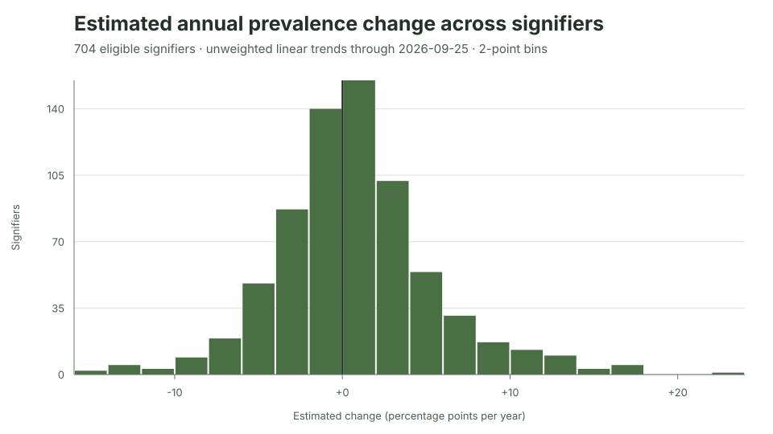

Ipseity Daily Pulse · 2026-09-26
A trend leaderboard is not a discovery list
Why none of 704 descriptive trend tests becomes a discovery after either multiplicity screen.
By Ceetown · 3 minute read
Ipseity Daily offers hundreds of identity signifiers to explore. That makes the most dramatic trend estimates easy to find—and easy to overread.
In the current data, 704 signifiers have enough observations and
calendar coverage for the same descriptive trend model.
beautiful has the largest positive point estimate at +24.0
percentage points per year, while star wars fan has the
most negative at -14.2. Yet after screening all 704 tests together,
none passes either the 5% Benjamini–Hochberg or
Bonferroni threshold.
This does not make the data uninteresting. It changes the question. The leaderboard identifies patterns to monitor and test on later data; it does not identify 704 independent chances to announce a winner.
Source: Ipseity Daily download page

Evidence note
The values use canonical microdata through 2026-09-25, retrieved at
2026-09-26T10:02:00Z. Models are unweighted linear-probability
descriptions with respondent-clustered uncertainty. Neither adjustment
establishes population representativeness or corrects changing
unobserved composition, functional-form error, or the selection of
extrema. Full methods and results are in CURRENT-FINDINGS.md and outputs/signifier-growth.csv.